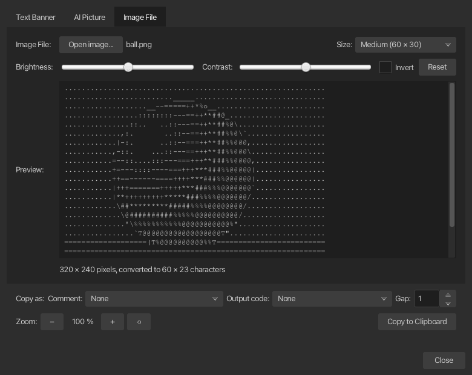
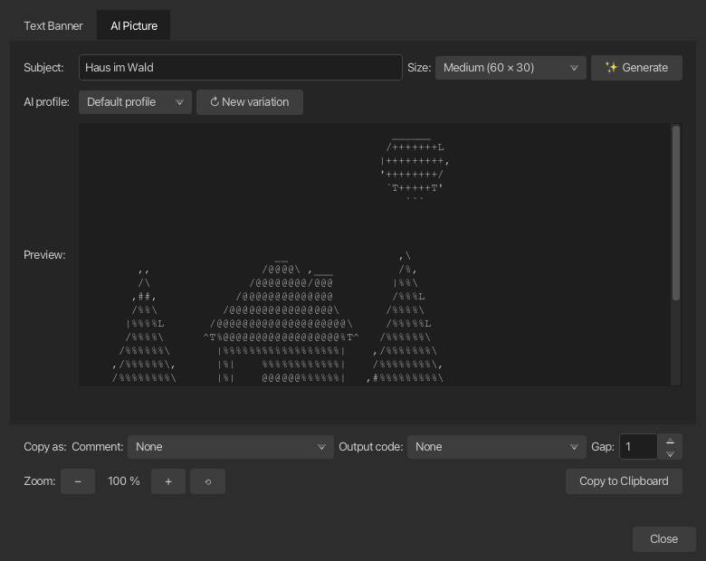

ASCII-Art¶
Erstellen Sie ASCII-Art auf drei Arten: Rendern Sie Text als FIGlet-Banner, lassen Sie die KI ein Bild von einem Thema wie „Haus im Wald“ zeichnen oder konvertieren Sie eine vorhandene Bilddatei. Alle drei befinden sich in einem Dialog hinter ihrer eigenen Registerkarte, teilen eine zoombare Vorschau und kopieren sie in die Zwischenablage – einfach, als Codekommentar oder als vorgefertigte Druckanweisungen – zur Verwendung in Terminalskripten, Anmeldebannern oder Dokumentation.
Zugriff auf das Tool¶
Öffnen Sie den Dialog über Extras > ASCII Art... in der Menüleiste oder drücken Sie Ctrl+Shift+A (Cmd+Shift+A unter macOS).
Registerkarte „Textbanner“.¶
Stil¶
Wählen Sie im Dropdown-Menü einen FIGlet-Schriftstil aus. Standard und Slant stammen aus der jfiglet-Bibliothek; 3-D, Banner, big, block, cosmic, Digital, Lean, roman, script und small sind gebündelte FIG-Schriftarten. Ein Stil, dessen Schriftartdatei nicht geladen werden kann, wird aus der Liste ausgeschlossen.
Wechseln Sie zwischen Stilen mit dem Dropdown-Menü, mit den Pfeiltasten (Left, Right, Up, Down), während das Dropdown-Menü den Fokus hat, oder mit den Tasten ◀ und ▶ daneben.
Text¶
Geben Sie den zu konvertierenden Text in das Feld Text ein oder fügen Sie ihn ein. Die mehrzeilige Eingabe wird unterstützt – jede Zeile wird einzeln konvertiert und leere Zeilen bleiben leer.
Die Vorschau wird während der Eingabe und bei jeder Änderung des Stils neu gerendert.
AI Registerkarte „Bild“.¶
Anstelle von Buchstaben fordert diese Registerkarte ein Modell auf, das Motiv als kleine Vektorzeichnung (eine eingeschränkte SVG-Datei) zu zeichnen, die korTTY dann selbst in ASCII-Zeichen umwandelt – ein Modell kann Formen weitaus besser beschreiben als ausgerichtete Zeichen eingeben.
| Steuerung | Was es tut |
|---|---|
| Thema | Das Ding zum Zeichnen zum Beispiel house in the forest. Drücken Enter startet die Generation. |
| Größe | Das Zeichenraster, in das das Bild eingepasst wird: Klein (40 × 20), Mittel (60 × 30), Groß (80 × 40) oder Extragroß (100 × 50). Zwischen den Sitzungen erinnert. |
| Generieren | Fordert ein Bild für den Betreff an. |
| AI-Profil | Welches Profil verarbeitet diesen Lauf? Die Auswahl ist vorübergehend und ändert Ihr Standardprofil nicht. |
| Neue Variante | Zeichnet dasselbe Motiv mit einer anderen Behandlung neu – Blickwinkel, Detaillierungsgrad, Szenenkontext, geometrischer Stil, Proportionen, Kontrast oder Farbtöne – und fragt bei jedem Wiederholungsversuch erneut nach etwas anderem. |
| Abbrechen | Stoppt die laufende Generierung; Das vorherige Bild bleibt erhalten. |
Für die Registerkarte ist mindestens ein konfiguriertes AI-Profil und der aktivierte AI-Features-Schalter erforderlich. andernfalls bleiben die Steuerelemente deaktiviert und die Statuszeile zeigt dies an.
Die Statuszeile benennt den aktuellen Schritt: die KI nach einer Zeichnung fragen, sie in Zeichen umwandeln, noch einmal fragen oder die KI bitten, das Bild direkt einzugeben. Wenn eine Antwort keine brauchbare Zeichnung enthält, fragt korTTY noch einmal nach und teilt dem Modell mit, was falsch war; Wenn auch dies fehlschlägt, wird das Modell wieder aufgefordert, das ASCII-Bild direkt einzugeben, und dies wird in der Statuszeile angezeigt. Dort werden auch Fehler, eine abgeschnittene Antwort und „Kein brauchbares Bild“-Antworten zusammen mit dem Grund gemeldet.
Note
Das Modell gibt eine Zeichnung anstelle von Zeichen zurück: korTTY zeichnet sie außerhalb des Bildschirms, passt sie in die gewählte Größe ein und wählt ein druckbares ASCII-Zeichen pro Zelle aus, sodass das Ergebnis immer einfaches ASCII ist, das in das Raster passt, mit beschnittenen Zeilen und Spalten am leeren Rand. Eine Zeichnung wird überprüft, bevor sie angezeigt wird – sie muss Formen enthalten, innerhalb der Leinwand liegen, weder leer noch ein fester Block sein und groß genug sein. Nur der Direkteingabe-Fallback zeigt die eigenen Zeichen des Modells an, wie zuvor bereinigt und auf die gewählte Größe zugeschnitten: Ein eingezäunter Codeblock wird entpackt, Reasoning-Blöcke und Steuerzeichen werden entfernt, Tabulatoren werden zu Leerzeichen und leere Anfangs- und Endzeilen werden abgeschnitten. Für diese Aktion schaltet korTTY die Reasoning des Modells dort ab, wo das Profil dies zulässt, begrenzt die Antwortlänge und überspringt Wissensspeicher, da ein Bild von beidem nichts profitiert.
Registerkarte „Bilddatei“.¶
Diese Registerkarte konvertiert ein vorhandenes Bild – ein Foto, ein Logo, ein Symbol – in ASCII-Grafik auf Ihrem Computer; Es ist kein KI-Profil beteiligt. Öffnen Sie eine Datei mit Bild öffnen… oder legen Sie sie auf der Registerkarte ab. Es werden PNG, JPEG, GIF und BMP gelesen.
| Steuerung | Was es tut |
|---|---|
| Größe | Das Zeichenraster, in das das Bild eingepasst wird, wobei das Seitenverhältnis beibehalten wird: Ein Landschaftsfoto verwendet weniger Zeilen, ein Porträtfoto eine Spalten weniger. Zwischen den Sitzungen erinnert. |
| Helligkeit | Verschiebt alle Töne heller oder dunkler. |
| Kontrast | Verbreitert oder glättet die Töne um mittleres Grau. |
| Invertieren | Vertauscht hell und dunkel. ASCII-Tinte ist auf hellem Hintergrund dunkel, sodass ein helles Motiv auf dunklem Hintergrund nur dann richtig gelesen wird, wenn es invertiert wird. |
| Reset | Returns brightness, contrast and inversion to neutral. |
Jede Änderung wird sofort wieder konvertiert und in der Statuszeile wird die Quellgröße in Pixel und die Ergebnisgröße in Zeichen angezeigt.
Note
Bevor Ihre Anpassungen angewendet werden, streckt korTTY den eigenen Tonwertbereich des Bildes auf den vollen Kontrast (wobei der dunkelste und hellste Prozentsatz der Pixel ignoriert wird), da sich Fotos in den Mitteltönen anhäufen und andernfalls zu einem einzigen Graublock würden. Transparente Pixel zählen als weißes Papier. Sehr große Dateien werden beim Öffnen am langen Rand auf 1600 Pixel verkleinert; Mehr Details kann das Zeichenraster ohnehin nicht erreichen. Freistehende Motive, Logos und Icons lassen sich gut konvertieren; Aufwendige Fotos benötigen ein großes Format und in der Regel einen gewissen Kontrast.
Vorschauzoom¶
Alle Registerkarten teilen sich eine Zoomstufe, sodass ein Banner und ein Bild immer in der gleichen Größe angezeigt werden.
| Aktion | Steuert |
|---|---|
| Vergrößern | *+-Taste, Ctrl++, oder Ctrl und scrollen Sie nach oben über die Vorschau |
| Schrumpfen | −-Taste, Ctrl+-, oder Ctrl und scrollen Sie nach unten über die Vorschau |
| Zurücksetzen | ⟲-Taste oder Ctrl+0 |
Der Prozentsatz zwischen den Schaltflächen zeigt den aktuellen Wert an, von 50 % bis 333 %, wobei 100 % die standardmäßige 12-Pixel-Monospace-Größe ist.
In die Zwischenablage kopieren¶
In die Zwischenablage kopieren kopiert die Vorschau der aktuell geöffneten Registerkarte, sodass Sie das Banner von der Registerkarte „Textbanner“ und das Bild von der Registerkarte „AI-Bild“ oder „Bilddatei“ erhalten. Die Zeile Kopieren als über den Schaltflächen bestimmt die Form dessen, was in der Zwischenablage landet, sodass ein Bild direkt in den Programmcode eingefügt werden kann:
| Steuerung | Was es tut |
|---|---|
| Kommentar | Fügt vor jeder Bildzeile eine Kommentarmarkierung ein oder umschließt das Bild mit einem Blockkommentar, sodass es im Quellcode platziert werden kann, ohne ausgeführt zu werden. |
| Ausgabecode | Wandelt jede Bildzeile in eine Druckanweisung der gewählten Sprache um, mit den Anführungszeichen und Escapezeichen, die diese Sprache benötigt, sodass ein Skript das Bild so druckt, wie es ist. |
| Lücke | Die Anzahl der Leerzeichen vor jeder Bildzeile – zwischen der Kommentarmarkierung und dem Bild oder innerhalb der gedruckten Zeichenfolge –, um das Bild auszurichten. 0 bis 20, Standard 1. |
Kommentar und Ausgabecode schließen sich gegenseitig aus: Wenn Sie das eine auswählen, wird das andere auf Keine zurückgesetzt. Alle drei Auswahlmöglichkeiten werden zwischen den Sitzungen gespeichert und im Tooltip der Schaltfläche „Kopieren“ wird die erste Zeile so angezeigt, wie sie kopiert wird.
Kommentarstile¶
| Stil | Sprachen |
|---|---|
# |
Bash, Perl, Python, Ruby, YAML, TOML, PowerShell |
// |
Java, C, C++, JavaScript, TypeScript, Go, Rust, Kotlin, Swift, PHP |
-- |
SQL, Lua, Haskell, Ada |
; |
Lisp, Clojure, INI, Assembler |
% |
LaTeX, MATLAB, Erlang |
' |
VB, VBA |
REM |
Charge |
/* … */ |
Blockkommentar im C-Stil; Jeder Bildzeile ist ein vorangestellt * |
<!-- … --> |
XML, HTML, SVG, Markdown |
[ "…", … ] |
JSON-String-Array – das Bild als Liste von String-Werten |
Ausgabecode¶
| Sprache | Angabe pro Bildzeile |
|---|---|
| Bash / sh Heredoc | cat <<'KORTTY_ASCII_ART' … KORTTY_ASCII_ART – überhaupt kein Escape |
| Bash | echo '…' |
| POSIX sh | printf '%s\n' '…' |
| Perl | print '…', "\n"; |
| Python | print("…") |
| Rubin | puts '…' |
| PHP | echo '…', PHP_EOL; |
| JavaScript | console.log("…"); |
| Java | System.out.println("…"); |
| C | puts("…"); |
| C# | Console.WriteLine("…"); |
| Los | fmt.Println("…") |
| Rost | println!("…"); |
| Kotlin | println("…") |
| Swift | print("…") |
| Lua | print("…") |
| PowerShell | Write-Output '…' |
| Charge | echo(… |
Note
Damit der kopierte Text gültig bleibt, müssen einige Zeichen geändert werden: In einem Blockkommentar im C-Stil wird */ zu +/, in einem XML-Kommentar wird jeder zweite Bindestrich eines ---Laufs zu =, da XML -- in Kommentaren verbietet, JSON-Strings entkommen Backslashes und Anführungszeichen, Rust verdoppelt { und }, Kotlin entgeht $, C schreibt ?? um, sodass es nicht als Trigraph gelesen wird, und Batch maskiert ^ & | < > ( ) " und verdoppelt %. Zeilenkommentare und das Bash-Heredoc kopieren das Bild unverändert. Drei Fälle bleiben außerhalb dessen, was durch Escape behoben werden kann: Bei einer Lücke von 0 verschluckt Bashs echo eine Bildzeile, die genau -n oder -e ist (verwenden Sie das Heredoc, printf oder die Standardlücke von 1); eine Batch-Datei mit aktivierter verzögerter Erweiterung interpretiert weiterhin ! und eine REM-Zeile erweitert weiterhin %~; und ein //-Kommentar, dessen letzte Bildzeile mit einem Backslash endet, würde in C und C++ die nächste Quellzeile verschlucken, sodass korTTY in diesem Fall eine leere //-Zeile anhängt.
Beispiel¶
Der Banner-Stil mit dem Eingabetext „Nostromo“:
# #
## # #### #### ##### ##### #### # # ####
# # # # # # # # # # # ## ## # #
# # # # # #### # # # # # # ## # # #
# # # # # # # ##### # # # # # #
# ## # # # # # # # # # # # # #
# # #### #### # # # #### # # ####
Dialogstatus¶
Der Dialog merkt sich seine Fensterposition, seine Größe, die Vorschau-Zoomstufe, die Bildgrößen der Registerkarten „AI-Bild“ und „Bilddatei“ sowie die Kopiereinstellungen zwischen Sitzungen.

